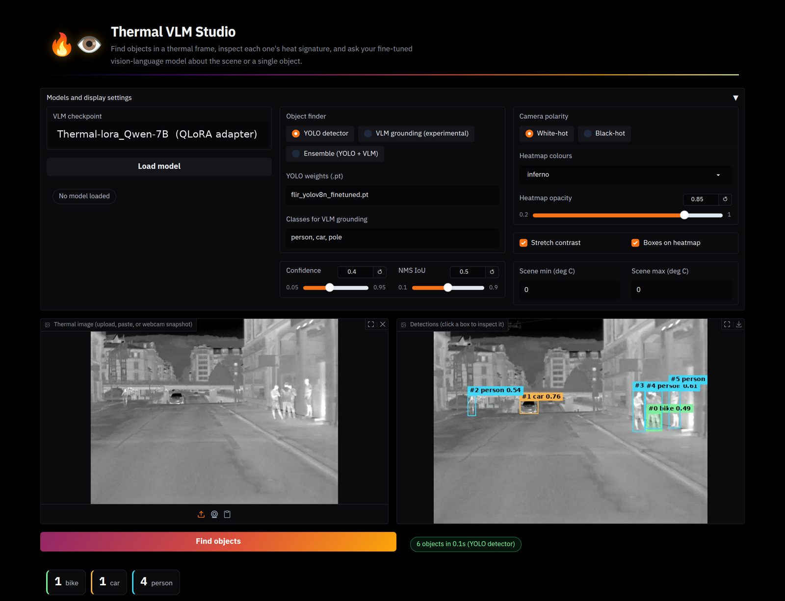

Night & low-visibility driving
Answer “is there a person ahead?” from detector evidence through darkness and fog; keep the VLM for slower descriptive feedback.
Long-wave infrared · Vision-language models · Driver situational awareness
Thermal cameras see pedestrians and vehicles at night, in glare, and in fog, where visible-light cameras fail. Vision-language models (VLMs) could turn those frames into answers a driver-assistance interface can use, but models pretrained on RGB images transfer poorly to thermal imagery: they hedge, invent colours, and miscount.
We adapt five open VLMs to LWIR imagery with an identical 4-bit QLoRA recipe and combine them with a thermal YOLOv8n detector in a dual pathway: counting and presence questions are answered deterministically from the detections, and the adapted VLM answers everything else. We evaluate every configuration on unseen LYNRED sequences and on two public datasets, C3I and FLIR ADAS v2, with human-annotated ground truth, shared question sets, bootstrap confidence intervals and paired McNemar tests, and package the pipeline in an interactive tool, Thermal VLM Studio.

Interactive simulation
Drive a simulated LWIR road and watch the two pathways at work. The detector updates the object feed on every frame and answers counts at once; the VLM describes the scene on its own, slower clock. Steer with ← → (or the buttons), and click an object to inspect it.
Waiting for the first description…
Time-compressed ×4: in the Studio, one scene description took about 25 s on one GPU.
Illustrative simulation. The road and objects are generated in your browser, and the detector and VLM are emulated from the behaviour we measured: detections need confidence ≥ 0.40, recall falls for small and low-contrast objects, the detector has no pole class (poles come only from VLM grounding in Ensemble mode), and counts are answered from detections. The text is not model output and the page is not a real-time benchmark. See Cases and Studio for real outputs.
Two complementary pathways share one thermal frame and are combined on their outputs, not inside either network. Select a block to see what it does.
Every system answers the same questions per test set. Switch dataset and metric; hover a bar for its value. The dashed line marks the YOLO detector on its own.
Counting accuracy of the QLoRA models by true count. Counts in the training captions mention only salient objects, so the adapted models learn to answer small numbers.
Share of unseen LYNRED frames on which each QLoRA model still returns bounding boxes when asked to localize objects. Only Qwen3-VL-4B keeps useful grounding.
Top-1 accuracy on the night videos by weather tag (two videos and 300 questions per condition, so treat these as descriptive).
Real test frames with human boxes (green), YOLO detections (red), and every system's parsed answer (correct or wrong). Click a frame to open it; use the arrow keys to browse.
The end product: an interactive tool built on exactly the evaluated components. Numbers come from detections shown on screen; the VLM is used for description and reasoning.

Interactive response times on one NVIDIA RTX A6000, not a real-time benchmark. The tool is a research prototype for analysis and situational awareness with a human in the loop.
Answer “is there a person ahead?” from detector evidence through darkness and fog; keep the VLM for slower descriptive feedback.
Batch-screen recordings, export per-frame counts to CSV, and compare object finders to see what a detector misses.
Fixed thermal cameras counting pedestrians, vehicles and poles at night, as in the C3I roadside recordings.
The same detector + VLM design extends to search and rescue or inspection in smoke and darkness (not evaluated here).
311 frames from two recording sequences never used in training: 203 day / 108 night. Human-box counts for person and car; 1,188 questions.
300 frames, day / evening / night, roadside and vehicle-mounted cameras. Person, car and pole, plus JSON-count questions; 1,800 questions.
300 frames from the held-out test split: night fog, night rain, day, dawn. Person and car; 1,200 questions.
@article{thermvladas2026,
title = {ThermVLADAS: Grounded Vision-Language Understanding
for LWIR Driving Scenes},
author = {[Muhammad Ali Farooq, Fatima Khalid, Peter Corcoran]},
journal = {[Venue]},
year = {2026}
}
Datasets: LYNRED Mobility Dataset V1, C3I Thermal Automotive Dataset (NUIG), Teledyne FLIR ADAS v2. Please cite and respect their licenses.